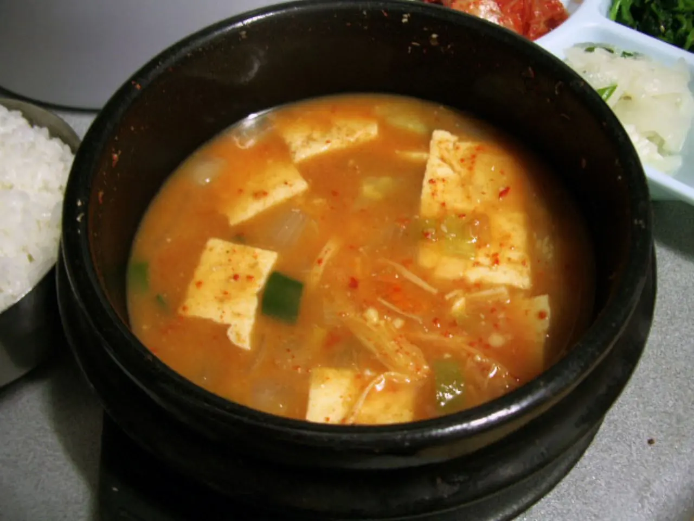

된장찌개는 쉬운 음식처럼 보이지만 집마다 맛 차이가 큽니다. 같은 된장을 써도 어떤 집은 국물이 둥글고 깊고, 어떤 집은 짜고 텁텁합니다. 차이는 대개 육수의 종류보다 재료를 넣는 순서에서 생깁니다. 버섯 된장찌개는 특히 그렇습니다. 버섯을 물에 바로 넣으면 향이 국물에 퍼지기 전에 물러지고, 된장을 너무 오래 끓이면 구수함보다 짠맛과 텁텁함이 앞설 수 있습니다. 버섯과 양파를 먼저 살짝 볶아 향을 열고, 된장은 물이 들어간 뒤 풀어 짧게 끓이는 편이 좋습니다.
2인분 기준 재료는 아래처럼 준비합니다. 멸치 다시마 육수가 있으면 좋지만 물만 써도 됩니다. 대신 물만 쓸 때는 버섯과 양파를 볶는 단계를 더 성실하게 가져가야 국물에 빈 느낌이 덜합니다.
| 구분 | 재료 | 분량 | 준비 기준 |
|---|---|---|---|
| 장류 | 된장 | 2큰술 | 처음에는 1큰술 반만 풀고 마지막 간에 나머지를 조절합니다. |
| 버섯 | 표고버섯 또는 느타리버섯 | 한 줌 | 표고는 얇게, 느타리는 결대로 찢어 향이 국물에 풀리게 합니다. |
| 채소 | 애호박, 양파 | 애호박 3분의 1개, 양파 4분의 1개 | 애호박은 도톰한 반달, 양파는 얇게 썰어 먼저 볶습니다. |
| 두부 | 두부 | 반 모 | 한입 크기로 썰고 애호박이 거의 익은 뒤 넣습니다. |
| 향 | 대파, 다진 마늘 | 대파 적당량, 마늘 1작은술 | 마늘은 된장과 함께, 대파는 마지막 1분에 넣습니다. |
| 선택 매운맛 | 고춧가루 또는 청양고추 | 조금 | 국물 색과 끝맛을 보며 마지막에 조절합니다. |
| 국물 | 물 또는 멸치 다시마 육수 | 재료가 잠길 정도 | 처음부터 많이 잡지 않고 끓이며 조금씩 보충합니다. |
버섯은 먼저 숨을 죽이나

냄비에 식용유를 아주 조금만 두르고 버섯과 양파를 먼저 넣습니다. 된장찌개에 기름을 넣는 것이 낯설 수 있지만, 양이 많지 않으면 국물이 느끼해지지 않고 향을 끌어내는 데 도움이 됩니다. 버섯은 처음에 부피가 크지만 열을 받으면 금방 숨이 죽습니다. 이때 소금을 넣지 않아도 됩니다. 된장이 뒤에 들어가므로 초반 간은 비워 두는 편이 안전합니다.
버섯을 볶을 때 목표는 갈색으로 바삭하게 굽는 것이 아닙니다. 버섯 표면의 수분을 살짝 날리고, 양파가 투명해지기 시작하는 정도면 충분합니다. 표고버섯은 향이 강하므로 조금만 넣어도 좋고, 느타리버섯은 국물에 부드럽게 풀립니다. 새송이버섯은 씹는 맛이 좋아 큼직하게 썰어도 좋습니다. 여러 버섯을 섞으면 국물의 향이 넓어지지만, 너무 많이 넣으면 찌개보다 버섯탕처럼 느껴질 수 있습니다.
양파가 달아지고 버섯 향이 올라오면 물이나 육수를 붓습니다. 이 순간 냄비 바닥에 남아 있던 향이 국물로 풀립니다. 물은 처음부터 많이 넣지 않습니다. 재료가 잠길 정도에서 시작하고, 끓으면서 농도를 보아 조금씩 더합니다. 된장찌개는 국이 아니라 찌개이므로 국물이 많으면 맛이 금방 얇아집니다.
된장은 언제 풀어야 하나
물이 끓기 시작하면 불을 중불로 낮추고 된장을 풉니다. 된장은 체에 내려도 좋고, 국자로 냄비 안에서 천천히 풀어도 됩니다. 중요한 것은 된장을 넣고 아주 오래 팔팔 끓이지 않는 것입니다. 오래 끓이면 진해질 것 같지만 실제로는 향이 날아가고 짠맛이 선명해질 수 있습니다. 된장을 푼 뒤 6분 안팎이면 기본 맛은 충분히 나옵니다.
된장마다 염도와 단맛이 다릅니다. 처음부터 2큰술을 모두 넣기보다 1큰술 반을 먼저 풀고, 끓인 뒤 맛을 보며 나머지를 더하는 방식이 안정적입니다. 집된장은 깊지만 짤 수 있고, 시판 된장은 부드럽지만 단맛이 있을 수 있습니다. 고추장을 조금 넣고 싶다면 반 작은술 정도만 넣습니다. 많이 넣으면 된장찌개가 아니라 고추장찌개 쪽으로 맛이 이동합니다.
다진 마늘은 된장과 함께 넣되 많이 넣지 않습니다. 마늘이 너무 강하면 버섯 향을 덮습니다. 고춧가루는 국물 색과 매운 향을 더하지만 텁텁함도 만들 수 있으므로 마지막에 조금만 넣어 조절합니다. 청양고추를 넣는다면 얇게 썰어 끝부분에 넣는 편이 향이 산뜻합니다.
두부는 왜 마지막에 넣나
애호박은 된장을 푼 뒤 바로 넣어도 괜찮습니다. 너무 얇게 썰면 금방 무르고, 너무 두꺼우면 국물 맛이 배기 전에 익는 시간이 길어집니다. 반달 모양으로 도톰하게 썰면 식감이 좋습니다. 두부는 애호박이 거의 익은 뒤 넣습니다. 처음부터 넣고 오래 끓이면 부서지기 쉽고, 두부가 국물을 지나치게 흡수해 간이 세게 느껴질 수 있습니다.
두부를 넣은 뒤에는 세게 젓지 않습니다. 국자로 국물을 위에서 끼얹듯이 움직이면 모양이 유지됩니다. 대파는 마지막 1분에 넣어야 향이 살아납니다. 냄비 가장자리에 거품이 올라오면 걷어내되 너무 집요하게 걷을 필요는 없습니다. 된장의 콩 성분과 버섯의 수분이 만드는 자연스러운 거품도 있기 때문입니다.
마지막 간은 국물만 떠먹지 말고 두부와 버섯을 함께 먹으며 봅니다. 국물은 맞는데 두부가 싱거우면 조금 더 끓이면 되고, 두부까지 짜면 물을 약간 더합니다. 밥과 함께 먹는 찌개이므로 국물만 먹었을 때 약간 짭짤한 정도가 자연스럽습니다. 다만 끓일수록 짠맛이 올라오니 마지막에는 불을 오래 두지 않는 편이 좋습니다.
다음 날 더 짜지는 이유
된장찌개는 식으면서 재료가 국물을 더 머금습니다. 특히 두부와 애호박은 시간이 지나면 간이 깊게 배지만, 동시에 국물은 줄어들어 더 짜게 느껴질 수 있습니다. 남은 찌개를 보관할 때는 완전히 식힌 뒤 냉장하고, 다시 데울 때 물을 조금 더해 농도를 돌려놓습니다. 처음 맛 그대로를 기대하기보다 다음 끼니에는 더 진한 찌개로 먹는다고 생각하면 좋습니다.
버섯 된장찌개를 자주 만들수록 기준은 단순해집니다. 버섯과 양파는 먼저 볶아 향을 열고, 물은 적게 시작하고, 된장은 나누어 풀고, 두부와 대파는 늦게 넣습니다. 멸치 육수가 있으면 맛이 편해지지만, 순서가 흐트러지면 좋은 육수도 텁텁해질 수 있습니다. 반대로 물만 써도 볶는 순서와 된장 타이밍을 지키면 국물은 충분히 깊어집니다.
밥상에 올릴 때는 찌개를 완전히 가득 담기보다 두부와 버섯이 위로 보일 만큼만 담는 편이 좋습니다. 너무 오래 끓인 뒤 상에 올리면 대파 향이 사라지므로, 가능하면 불을 끄기 직전에 대파를 넣고 바로 냅니다. 김치나 장아찌처럼 짠 반찬이 함께 있다면 찌개의 간은 조금 낮춰야 밥상이 편안합니다. 반대로 나물이나 달걀말이처럼 순한 반찬이 많다면 청양고추 한두 조각으로 끝맛을 세워도 좋습니다. 된장찌개는 한 그릇만의 맛보다 주변 반찬과의 균형까지 맞을 때 더 오래 손이 갑니다.
한 냄비의 된장찌개는 밥상 전체의 중심을 잡아 줍니다. 너무 화려할 필요는 없습니다. 버섯 향이 먼저 올라오고, 된장의 구수함이 뒤따르고, 두부가 부드럽게 남으면 충분합니다. 다음에 맛이 흐리게 느껴진다면 된장을 더 넣기 전에 버섯을 먼저 볶았는지, 물을 너무 많이 잡지 않았는지, 마지막 대파를 너무 일찍 넣지 않았는지부터 돌아보면 됩니다.